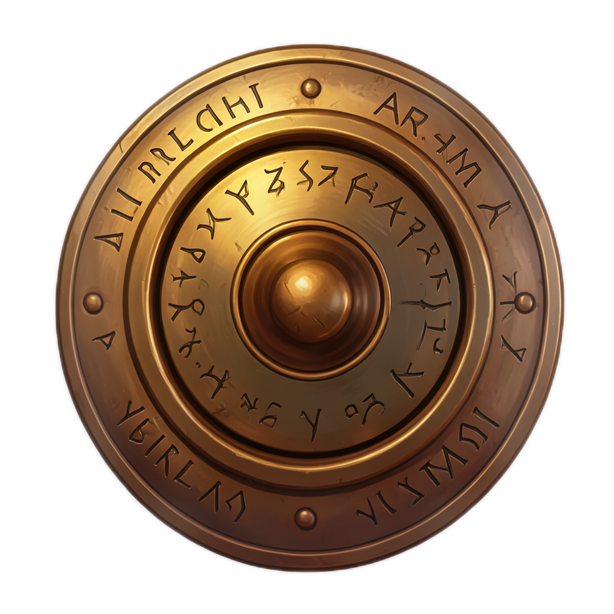

你的样式，你的目录
为物品、扁平图标、肖像和环境配置可编辑提示词与选项字段。保留完整背景，或为独立物体移除背景。
模型与样式Runtime Image Forge
让玩家创造属于自己的东西。在本地生成图片，保存配方，并将结果转化为可收藏或分享的物品。
Unity 工具 · Windows x64 原生 DLL 后端
Samples 包含完整可编辑配套游戏。

在编辑器中设定美术方向。定义游戏允许的选项，准备本地模型，并提交参数明确的生成任务。由游戏决定何时将结果变成物品。
为物品、扁平图标、肖像和环境配置可编辑提示词与选项字段。保留完整背景，或为独立物体移除背景。
模型与样式以 Texture2D 或 Sprite 显示结果。导出原始 PNG，并附带记录模型、seed、提示词及实际设置的配方。
保存与分享准备、预热、排队、取消、缓存和明确的错误信息。可选 Editor MCP 工具允许受信任的代理生成、检查与导出任务。
Editor MCP 工具小小工坊，属于你的收藏。
选择剑、盾牌、戒指或护符，挑选材料与装饰，锻造图片并收藏。保存透明 PNG 和配方，即可分享成果。
Unity 包包含完整可编辑配套游戏： 场景、游戏源码、工坊美术和配乐。需要学习或修改时，可从 Samples 导入。 在 Unity 中打开随附游戏。
查看随附游戏的设置收藏最多保存 256 件物品，每页四件。可导出到游戏旁边或游戏数据目录。失败和取消的订单不会新增物品。
游戏界面为英语。附带英语、俄语、西班牙语和简体中文的首次启动说明。独立游戏无需购买插件或安装 Unity。
权重单独获取：Bonsai 使用免费模型包，可从 The Ember Forge 页面 下载；Klein 使用显式 HTTPS 下载。设置完成后可在玩家电脑上离线生成。硬件、分辨率及其他 GPU 任务会影响准备和生成。
Bonsai、Klein 与 U2NETP 使用 Apache-2.0。请阅读 组件与模型条款 ，再决定如何使用与分发。
从导入的模型与样式示例开始。完成场景设置，再选择游戏所需的 API 层级。文档说明资源所有权、取消、存档和导出。